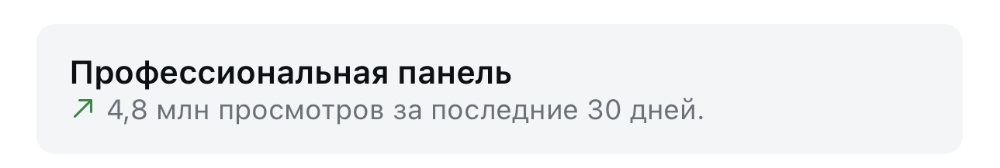

клиенты на автопилоте
Нейросеть проходит по картам, находит бизнес с сайтом будто из 2008 года, собирает каждому новый сайт на живой ссылке и отдаёт этот редизайн через их же форму. Три шага, проверенные инструменты, со скринами и ссылками
Холодная рассылка умерла не потому, что перестала работать, а потому, что все пишут одинаковые письма, которые никто не открывает. Эта схема переворачивает логику: человек получает не письмо-просьбу, а готовый результат - свой собственный новый сайт на живой ссылке
Весь цикл собирается из открытых инструментов, многие из них бесплатны. Ниже - три шага схемы: найти, собрать превью, отдать. Каждый с проверенными ссылками и готовым промптом для Claude
Claude проходит по картам и собирает список: кто, где, какой сайт, куда писать
Нейросеть делает новый сайт и выкладывает его на бесплатную живую ссылку
Редизайн уходит через форму на их сайте или письмом из твоего ящика
Сначала нужен список: местные бизнесы, у которых сайт старый или его нет совсем. Claude проходит по картам, проверяет каждый бизнес на наличие сайта и собирает таблицу с контактами. Два пути - бесплатный своими руками и готовый набор навыков
Куда нажать. В Google Cloud включи Places API (New) и получи свой ключ. У Google есть бесплатные кредиты на старте: десятки поисков в день в лимит не упираются
Что увидишь. По запросу «город + тип бизнеса» Claude собирает список: кто, адрес, телефон, есть ли сайт, ссылка на карточку. Готовый разбор такого поиска собрал Dylan Haugen - он за 20 минут сделал бесплатный поиск бизнесов без сайта на Claude Code
Что это даёт. Чистый список прогретых адресов под рассылку - без ручного прочёсывания карт
Куда нажать. Поставь набор открытых навыков Claude Code для поиска по картам - внутри уже готовые скиллы: поиск бизнесов, сбор почт, анализ конкурентов, холодные письма
google-maps-agent-skills
8 навыков Claude Code для лидогенерации по картам: local-business-finder, business-email-extractor, competitor-analysis-local, cold-email-local-business и другие. Бесплатный ключ на gmapsscraper.io, 10 кредитов при регистрации
github.com/gmapsscraper/google-maps-agent-skills · 132 звезды · MIT-0
Что это даёт. Не нужно писать поиск с нуля - ставишь набор и сразу просишь Claude собрать лидов
Теперь на каждый бизнес из списка Claude собирает новый сайт и выкладывает его на живую ссылку. Не макет в картинке, а настоящий сайт, который открывается в браузере. Снова два пути - своими руками через Claude и готовый сервис
Куда нажать. Дай Claude адрес бизнеса, он разберёт старый сайт, соберёт новый на чистом коде и задеплоит на Vercel - это бесплатный хостинг, который сразу выдаёт живую ссылку
Что увидишь. Ссылку вида biznes-redesign.vercel.app, которая открывается у кого угодно в браузере. Это отдельный проект, настоящий сайт клиента ты не трогаешь
Что это даёт. У тебя на руках готовый результат под конкретный бизнес, собранный за минуты, а не за неделю
Куда нажать. Вводишь URL бизнеса - сервис собирает макет редизайна с одним конкретным улучшением и даёт живую ссылку, которую можно отправить клиенту
revamp.dev
Превью редизайна под холодную рассылку: живая ссылка в браузере, твой проект отдельно от сайта клиента. Подход честный - сервис сам отговаривает выдумывать проблемы и завышать обещания. Агентские планы платные, базовое превью доступно с формы на главной
Что это даёт. Если не хочешь собирать деплой сам - сервис делает превью и живую ссылку за тебя
Последний шаг - доставить готовый сайт человеку так, чтобы он его увидел. Не «посмотрите наше предложение», а «вот ваш новый сайт, ссылка внутри». Два канала: форма на их же сайте и письмо из твоего ящика
Куда нажать. У большинства бизнесов на сайте есть форма обратной связи. Claude берёт из списка шага 1 эти формы и отправляет короткое сообщение со ссылкой на превью
Что увидишь. Сообщение приходит туда, куда владелец реально смотрит - в свою же заявку, а не в спам-папку почты
Что это даёт. Первое, что человек открывает, - его собственный новый сайт. За счёт этого отклик резко растёт
Куда нажать. Поставь открытый набор для рассылки - он пишет персональное письмо под каждый бизнес и отправляет из твоего ящика
local-lead-outreach
Находит местные бизнесы, пишет персональные холодные письма и отправляет из твоего ящика. Работает в Claude Code на твоей подписке - отдельный LLM-ключ не нужен, запускается командой /outreach. Для поиска нужен ключ SerpAPI
Что это даёт. Письмо не шаблон, а под конкретный бизнес со ссылкой на его готовый сайт - и уходит от твоего имени, не от робота
github.com/gmapsscraper/google-maps-agent-skills - 8 навыков Claude Code для поиска бизнесов по картам, 132 звезды, MIT-0revamp.dev/website-redesign-cold-outreach - превью редизайна на живой ссылке под холодную рассылкуgithub.com/awaispasha7/local-lead-outreach - поиск бизнесов и письма из своего ящика в Claude Code, MITGoogle Places API (New) - официальная документация поиска бизнесов по картамvercel.com - бесплатный хостинг, живая ссылка на собранный сайт-превьюЯ одна, в декрете, без команды собрала этот завод сама. Поиск клиентов нейросетью - один кирпич. Что продавать, кому, как превратить готовое превью в заявку и как соединить поиск, сайты и переписку в одну машину, за тебя никто не решит
Мой блог ведут ИИ-агенты: находят темы, которые уже залетели, пишут сценарии, собирают рилсы с цифровым двойником и выдают материалы по кодовым словам. Я проверяю и принимаю решения



Три рилса по миллиону просмотров и больше, без рекламы и без команды
Ту же систему из нейросетей я собираю для экспертов: контент, автоворонки, боты, сайты и продажи. Дизайнер, монтажёр, таргетолог, копирайтер и менеджер по продажам в проекте не нанимались, их работу закрыли нейросети
Поставить поиск клиентов - вечер работы. Собрать систему, которая приводит клиентов под то, что ты продаёшь, и доводит их до оплаты, - другая задача, и начинается она с разбора, кого и чем ты закрываешь
На консультации разбираю, как выстроить такую систему под твой проект
Напиши слово
мне в личку Telegram
НаписатьМои каналы и страницы